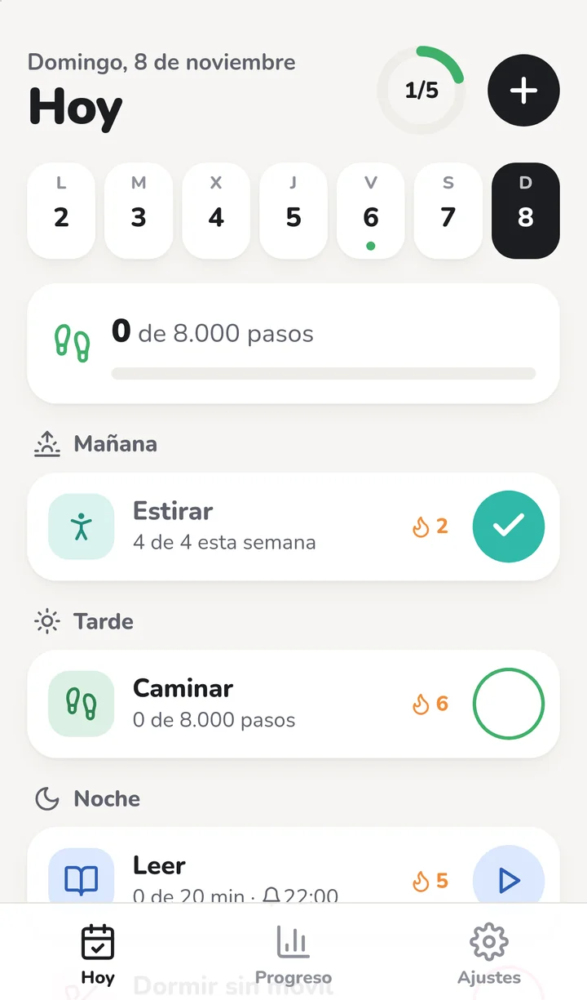
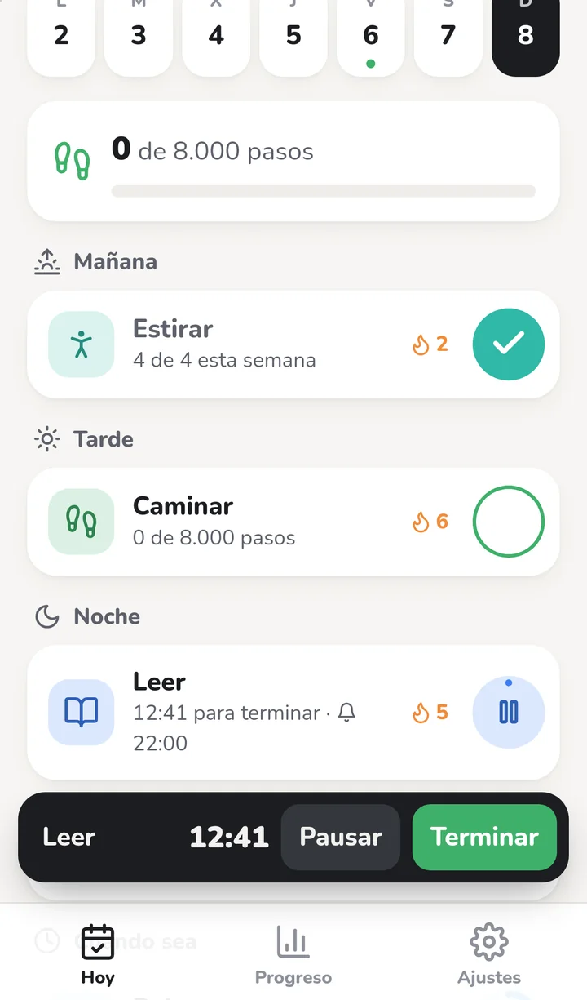
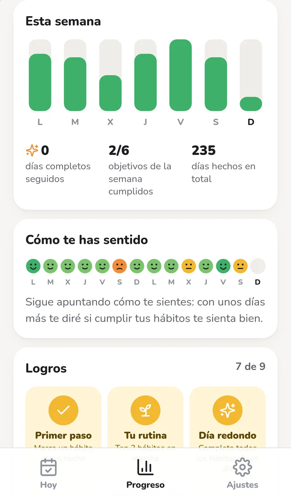
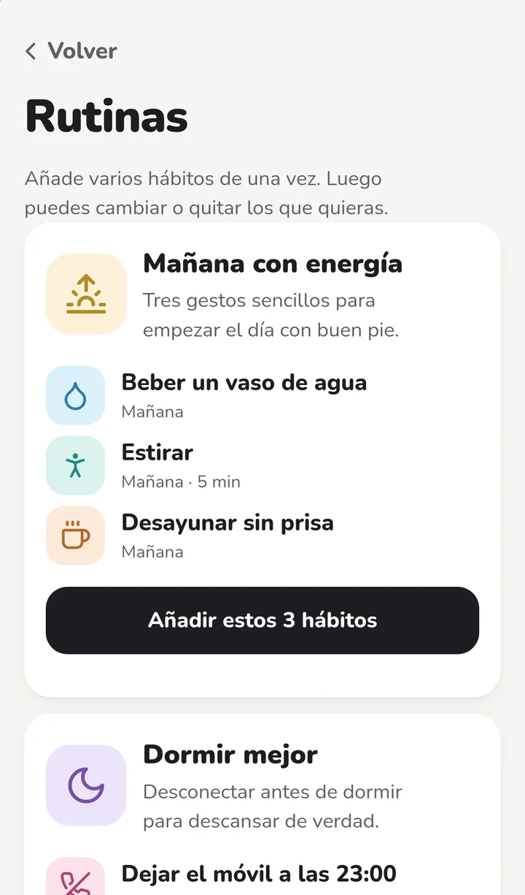

Gratis · sin registro · iPhone y Android
Tu rutina diaria, un toque cada vez.
Ordena tus hábitos por la mañana, la tarde y la noche. Cuando cumples uno, lo marcas con su botón redondo y tu racha crece. Así de simple.
Hoy
Pruébalo aquí
- Beber agua8 vasos al día
- EstirarPor la mañana
- Leer20 minutos por la noche
Toca los botones redondos.

Tu día
Todo lo de hoy, en orden
- Por momentos del día. Mañana, tarde, noche o cuando sea: cada hábito aparece cuando te toca.
- Un toque para marcarlo. Y si te equivocas, «Deshacer». Al tocar la tarjeta tienes todas las opciones.
- La semana arriba. ¿Se te olvidó apuntar ayer? Toca el día y márcalo.
- Días de descanso. Un día malo no rompe tu racha: márcalo como descanso.

A tu manera
Cuenta lo que haces como quieras
- Cantidad8 vasos de agua: cada toque suma uno.
- TiempoLeer 20 minutos con temporizador; al acabar, hecho.
- PasosCaminar 8.000 pasos y se marca solo.
- Días concretosGimnasio lunes, miércoles y viernes; el resto no cuenta.
- Veces al mesLlamar a la abuela dos veces al mes, sin día fijo.
- Dejar algoSin azúcar o sin fumar: cada día sin hacerlo suma solo.

Motivación
Mira cómo vas y celébralo
- Rachas y días completos. Cuando cumples todo lo del día, shabit lo celebra contigo.
- Retos y logros. 30 días sin azúcar, tu primera semana seguida, cien días hechos…
- Tu año de un vistazo. Un mapa con cada día, tu mejor día de la semana y un informe para guardar en PDF.
- Un compañero. Comparte un enlace para que alguien vea cómo vas y te anime. Sin tus notas.
- Cómo te sientes. Apunta tu ánimo y una nota del día, y descubre si tus hábitos te sientan bien.

Para empezar rápido
Rutinas listas en un toque
Añade varios hábitos de golpe y luego cámbialos a tu gusto.
- Mañana con energíaAgua, estirar y desayunar sin prisa
- Dormir mejorDejar el móvil, leer y acostarse antes
- Moverme másCaminar, beber agua y hacer ejercicio
- Mente tranquilaMeditar, escribir y agradecer
Y recordatorios: hasta tres horas por hábito, y shabit te avisa solo si aún no lo has hecho. Si quieres, un resumen por la mañana y cómo ha ido tu semana el domingo.
Con Atajos del iPhone: marca un hábito desde Siri o un atajo, sin abrir la app.
Instálala en tu móvil
shabit es una app web: se instala desde el navegador, sin tiendas, y funciona sin conexión.
iPhone
- Abre shabit.serenaesteve.com/app en Safari.
- Toca Compartir (el cuadrado con la flecha).
- Elige Añadir a pantalla de inicio.
- Ábrela desde su icono. Así puede avisarte y tus datos quedan a salvo.
iOS 16.4 o superior para los recordatorios.
Android
- Abre shabit.serenaesteve.com/app en Chrome.
- Toca el menú ⋮ de arriba a la derecha.
- Elige Instalar aplicación (o «Añadir a pantalla de inicio»).
- Ya la tienes con su icono, como cualquier app.
Tus hábitos, a salvo y sin cuentas
No hay registro, ni email, ni publicidad. Tus hábitos, tus días y tus notas se guardan en tu móvil y en SBD, la base de datos de shabit, ligados a un código anónimo. Así funciona sin conexión y no pierdes nada si cambias de móvil: con ese código los recuperas en otro.
Para los recordatorios, el servidor mira en SBD la hora de cada aviso y si ya lo has hecho. Desde Ajustes puedes borrar tus datos del servidor cuando quieras: se quedan solo en tu móvil.